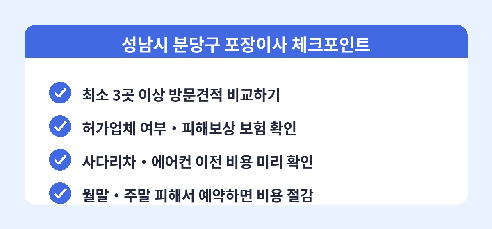

성남시 분당구는 정자동, 서현동, 수내동의 기존 대단지와 판교 신도시가 함께 있어 경기 남부에서 이사 수요가 가장 많은 지역 중 하나입니다. 평수가 넓은 세대가 많고 짐 양도 많은 편이라, 분당구 포장이사는 다른 지역보다 견적 편차가 특히 큽니다. 실제로 같은 32평형 아파트인데 업체에 따라 130만 원과 190만 원으로 60만 원 가까이 차이 난 후기도 어렵지 않게 찾아볼 수 있습니다.
분당구 기준 포장이사 가격은 원룸·오피스텔 45만~75만 원, 24평형 아파트 100만~140만 원, 32평형 이상 140만~200만 원 선에서 형성됩니다. 판교나 정자동 고층 단지는 사다리차 대신 엘리베이터를 이용해야 하는 경우가 많은데, 이때 양쪽 엘리베이터 사용료와 보양 작업 비용이 별도로 청구되기도 합니다. 짐이 많거나 피아노, 대형 냉장고 같은 특수 화물이 있다면 방문견적 때 반드시 미리 알려야 당일 추가 요금 분쟁을 피할 수 있습니다.

비교견적 서비스를 이용하면 분당구에서 활동 중인 여러 이삿짐센터의 견적을 한 번에 받아볼 수 있습니다. 업체 입장에서도 경쟁 상황을 알기 때문에 처음부터 거품 없는 가격을 제시하는 경우가 많고, 소비자는 가격뿐 아니라 서비스 구성까지 나란히 비교할 수 있습니다. 이사 날짜가 정해졌다면 3주 전에는 견적을 받아두는 것이 좋은 업체를 선점하는 요령입니다.
Q. 짐이 많은 30평대는 몇 명이 작업하나요?
보통 5톤 차량 1대에 작업 인원 3~4명이 기본이며, 짐이 많으면 차량과 인원이 추가됩니다. 견적서에 인원과 차량 톤수가 명시되어 있는지 반드시 확인하세요. 당일 인원이 줄면 작업 품질이 크게 떨어집니다.
Q. 이사 중 가구가 파손되면 보상받을 수 있나요?
적재물 배상보험에 가입된 업체라면 보상이 가능합니다. 이사 당일 짐 배치가 끝난 뒤 바로 상태를 확인하고, 파손을 발견하면 그 자리에서 사진을 찍어 업체에 알리는 것이 보상 처리에 유리합니다.
Q. 판교에서 분당 안으로 가까운 거리 이사도 비용이 비슷한가요?
이동 거리가 짧으면 유류비 부담은 줄지만, 포장이사 비용의 대부분은 인건비와 작업량이라 거리가 가까워도 크게 저렴해지지는 않습니다. 다만 근거리 이사는 하루 두 탕이 가능한 평일에 예약하면 협의 여지가 있습니다.